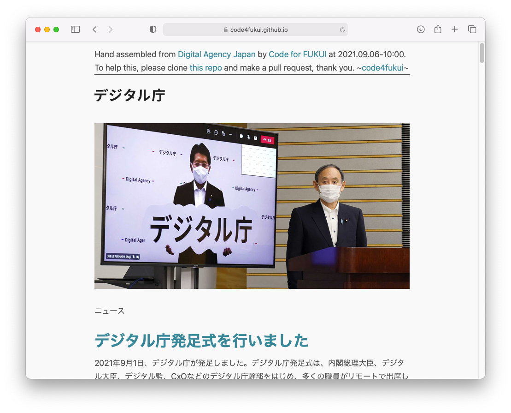

デジタル庁のWebサイトをSimpleHTMLに変換しよう！ぜひgithubでプルリクください！
デジタル庁発足式を行いました📃
— デジタル庁 (@digital_jpn) September 1, 2021
本日、デジタル庁発足式を行いました。総理や大臣、デジタル監の訓示を受け気持ち新たに始動しました！
また発足に伴いウェブサイトをリニューアルしましたので、ぜひご覧ください。https://t.co/oEQ79AaOs5
アジャイル感を備えてスタートした「デジタル庁」。さっそくデータを活用させてもらおうとWebサイトにアクセスしたところ、データは googleapis.com と studiodesignapp.com から配信されていて、digital.go.jp から出されている情報はなく、1次ソース感に乏しい感じ。
デジタル庁、w3mとかewwではなんも見えんね…。
— ⇔ Satoshi Kojima ⇔ (@skoji) September 1, 2021
また、テキストブラウザ（おそらく音声ブラウザも）では真っ白で何も見れない状態。

これではデータ活用もできない上に、取り残されるWebサーファーたちも出ることが予想されるため、「デジタル庁のWebをSimpleHTMLに変換しよう」プロジェクトをスタート。ひとまず index と about をシンプルなHTMLに変換しました。
noteを投稿しました📝
— デジタル庁 (@digital_jpn) September 3, 2021
デジタル庁ウェブサイトオープン後、様々なフィードバックをいただきありがとうございます！いただいたフィードバックから主な項目の改修を行いましたのでご報告いたします。
今後も引き続き忌憚なくフィードバックをいただければと思います。https://t.co/turBEqZ8ZT
デジタル庁は twitter でフィードバックを募集しており、さまざまに対応をしていくとのこと、期待しています。
デジタル庁サイトで公開されている予算を、CSVとMarkdownで活用しやすくオープンデータ化
— 福野泰介 (@taisukef) September 4, 2021
令和3年度当初予算3096億円、4年度要求は5426億円
国民一人当たり5千円/年https://t.co/6XGIbSLRVe
記事データだけでなく、さまざまな公開データも Code for FUKUI で データ化して公開中、ご利用ください。
社会のDX、まずは誰でもすぐにできるところから、
— Yuichi Ray Matta | 時を贈るおじさん (@yrm__) September 4, 2021
❌「別紙」
↓
⭕️「別資」
と呼称変更するとこをおすすめします。
実はDXの要点です。
PDFについても意見が上がっているようですが、PDFうんぬんよりもまず「別紙」という呼称を「別資」に変えましょう、きっとDXが進みますよ！
デジタル庁のWebページ( https://t.co/CTl4HXquYE )を Textブラウザや音声ブラウザ などで利用可能な SimpleHTML に変換しています。https://t.co/GtE6R0C0sV
— Yuichi Ray Matta | 時を贈るおじさん (@yrm__) September 6, 2021
まだ index と about だけ、ぜひあなたも「デジタル庁のWebをSimpleHTMLに変換しよう」プロジェクトにご参加ください！